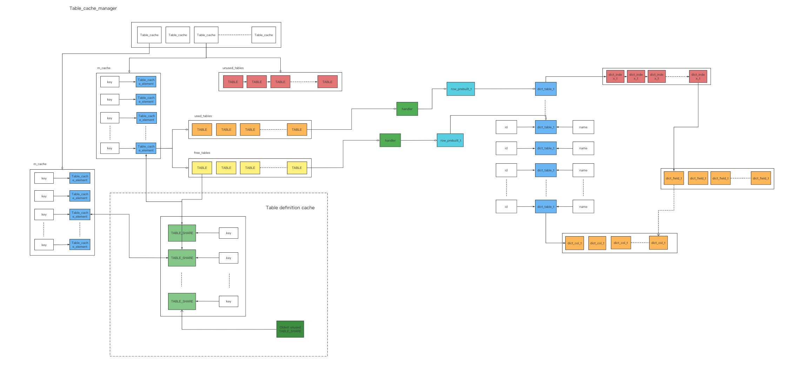

1. 前言#
大家都知道元数据（Metadata）是用来描述数据的数据，没有元数据的情况下我们就没办法理解、使用数据库中存储的数据。本文通过 InnoDB 开启一个表的流程来讨论 InnoDB 的元信息管理和相关开表流程代码。
2. 元数据管理#
2.1 元数据的物理存储#
在 MySQL 8.0 之前，Server 层和存储引擎层会各自保留一份元数据（schema name, table definition 等），不仅在信息存储上有着重复冗余，而且可能存在两者之间存储的元数据不同步的现象。MySQL 在 8.0 中引入了 data dictionary 来进行 Server 层和不同引擎间统一的元数据管理，这些元数据都存储在 InnoDB 引擎的表中，Server 层和引擎层共享一份元数据，且支持原子性。
这些元数据对应的 InnoDB 引擎表我们一般称为系统表，其表结构是固定的直接定义在代码类结构中（因此不再需要记录额外的元数据，要不然就套娃了），对应表文件在整个 MySQL 进行初始化时就建立了，有如 tables、columns、indexes、foreign_keys等系统表。可以通过下面的 SQL 在 debug 版本查看所有系统表：
1
2
3
4
5
6
7
8
|
SET SESSION debug='+d,skip_dd_table_access_check';
SELECT
id, name, schema_id, hidden
FROM
mysql.tables
WHERE
hidden='System' AND type='BASE TABLE';
|
对于某张用户表来说，其元数据就是通过这些系统表对应的行内容记录构成。各元数据表的逻辑关系可以近似看成是一颗树关联结构。其顶层入口是 table 表（mysql.tables）中的对应唯一记录，再通过记录的 table id 等索引项关联到如 columns、indexes 等各元数据系统表，进而获取这个表对应的所有元数据的记录内容。
graph TD;
tables--`name`-->catalogs;
catalogs--`catalog_id``name`-->schemata;
tables--`table_id``name`-->columns;
tables--`table_id``name`-->indexes;
tables--`...`-->...;
2.2 元数据的内存结构#
在明确了 DD 元信息在物理层面的存储格式后，我们能够很清楚的知道，当需要构建一张用户表的元数据时，我们首先需要访问所有需要的系统表（元数据表），并依次在各系统表内找到对应这张用户表的相应记录，然后用这些元数据记录构建出用户表的内存对象。
元数据表本身对应的内存对象结构是从 Object_table 类从派生出来的，有 Entity_object_table_impl 和 Object_table_impl 两大类。前者对应持久化有对应具体键对象的基本 DD 表，而后者对应着不单独存在需要通过前者关联访问的 DD 表（不能直接被 create，search，drop），例如两者分别对应派生出 Tables、Tablespaces、… 和 Columns、Indexes、… 等具体内存结构体，一一对应各元数据系统表。
值得一提，上面说的这些内存对象是元数据表本身的内存对象，也就是访问元数据表所使用的内存对象，而非某一张用户表的内存对象。类似的，对于一张用户表，也是通过对应的元数据记录构建其内存对象结构。一般从 Entity_object_impl 类从派生出来的，像常用的 Table_impl 和 View_impl 分别表示用户表和视图对应元数据的内存对象。
当缓存穿透时，这些 objects 的底层操作逻辑被封装在 Storage_adapter 中，通过提供的 get() / drop() / store() 等接口，遍历查询或修改所有所需元数据表（btree 结构）中对应的 record，构建或持久性相应的 object 内存对象由/到引擎层。
2.3 元数据的 cache 缓存#
从上述操作中可以看出，直接从元数据表构建 DD object 内存对象是开销十分巨大的，过程中需要物理访问并索引多个 Btree 索引。因此 MySQL 建立了多层的 DD Cache 来就可能减小元数据的访问开销，一般称为元数据的 3 层缓存架构：
- 每个 client 的独享缓存，即线程 THD 独占的
Dictionary_client 结构，其中有 committed、uncommitted、dropped 三类 objects map，最初 acquire 的 object 会被加入到committed map 中，client 调用 store 或 update 接口时将 object 放到 uncommitted map 中，然后在事务提交后将相应 objects 从 uncommitted map 移到 committed map 中，而调用 drop 接口会将 objects 加入 dropped map。当访问 Dictionary_client 穿透时，从 Shared_dictionary_cache 获取；
- Server 全局唯一的共享缓存，使用单例
Shared_dictionary_cache 来实现，其实质上也是 objects map 集合。在此缓存层相同 key 对应的 DD objects 对象唯一，这里的 key 其实就是对应元数据表的索引 key。当 Shared_dictionary_cache 穿透时，通过 Storage_adapter 从 InnoDB handler 读取元数据表记录。
- 存储引擎层（元数据表数据直接 BP 缓存），系统表的访问模式和普通用户表基本一致，注意采用的是 READ_COMMITTED 隔离级别。
3. 元数据的使用#
3.1 Server 层元数据的使用#
实现了 DD 元数据的管理，MySQL 就能够通过使用元数据构建访问用户表的环境，这也就是我们常说的“开表”逻辑。前面已经介绍了元数据表本身的内存对象，通过访问元数据表相应记录，类似的可以构建用户表（或其他内容，如视图等）的内存对象。
我们需要知道 Server 层的两个关键结构体 TABLE_SHARE 和 TABLE:
- 一张表被初次访问时，MySQL 会其建立一个 TABLE_SHARE 对象，与其与引擎层中的对应表
dict_table_t 相对应关联。TABLE_SHARE 是静态的，不能修改的，且一张表只存在一份，其中记录表定义相关的一些 DD 信息，如包含的字段等。TABLE_SHARE 只有在表结构被修改后才会删除，或者缓存使用满了会淘汰。简单的说，TABLE_SHARE 就是某张表定义的实体化对象。
- 对每一个会话查询中涉及的表，MySQL 会通过 TABLE_SHARE 为每个表建一个 TABLE 实体对象，这一过程叫表结构实例化。如果是 InnoDB 表还会创建 InnoDB 的 handler，server 层会话通过 TABLE 对象经引擎层操作表文件实体。可以将 TABLE 对象看做表在 server 层的映射，将 handler 看做其为操作底层数据文件而在引擎层创建的句柄。
“开表”逻辑就是通过访问元数据来获取 TABLE_SHARE 和构建 TABLE 实体对象的过程。我们具体看下 open_table 的代码逻辑。
1
2
3
4
5
6
7
8
9
10
11
12
13
14
15
16
17
18
19
20
21
22
23
24
25
26
27
28
29
30
31
32
33
34
35
36
37
38
39
40
41
42
43
44
45
46
47
48
49
50
51
52
53
54
55
56
57
58
59
60
61
62
63
64
65
66
67
68
69
70
71
72
73
74
75
76
77
78
79
80
81
82
83
84
85
86
87
88
89
90
91
92
93
94
95
96
97
98
99
100
101
102
103
104
105
106
107
108
109
110
111
112
113
114
115
116
117
118
119
120
121
122
123
124
125
126
127
128
129
130
131
132
133
134
135
136
137
138
139
140
141
142
143
144
145
146
147
148
149
150
151
152
153
154
155
156
157
158
159
160
161
162
163
164
165
166
167
168
169
170
171
172
173
174
175
176
177
178
179
180
181
182
183
184
185
186
187
188
189
190
191
192
193
194
195
196
197
198
199
200
201
202
203
204
205
206
207
208
209
210
211
|
bool open_table(THD *thd, Table_ref *table_list, Open_table_context *ot_ctx) {
// Step 0. 做一些前置检查...
// Step 1. 除特殊 DD 表等场景，LOCK TABLES mode(LTM)下校验是否表对象都是 pre-opened 的；
// Step 2. 非 LTM 模式（通常的模式），根据 mdl 请求模式获取 mdl 锁；
if ((flags & (MYSQL_OPEN_HAS_MDL_LOCK | MYSQL_OPEN_SECONDARY_ENGINE)) == 0) {
// 如果需要 write_lock mdl，还要获取 global read lock 保证正确冲突性
// ...
if (open_table_get_mdl_lock(thd, ot_ctx, table_list, flags, &mdl_ticket) ||
mdl_ticket == nullptr) {
return true;
}
} else {
/* caller 获取过 MDL 锁 */
mdl_ticket = table_list->mdl_request.ticket;
}
// Step 3. 检查目标表的存在性；
if (table_list->open_strategy == Table_ref::OPEN_IF_EXISTS ||
table_list->open_strategy == Table_ref::OPEN_FOR_CREATE) {
bool exists;
if (check_if_table_exists(thd, table_list, &exists)) return true; /* 空读 */
if (!exists) { /* table 不存在于 DD，升级到 EXCLUSIVE MDL lock. */
if (table_list->open_strategy == Table_ref::OPEN_FOR_CREATE &&
!(flags & (MYSQL_OPEN_FORCE_SHARED_MDL |
MYSQL_OPEN_FORCE_SHARED_HIGH_PRIO_MDL))) {
MDL_deadlock_handler mdl_deadlock_handler(ot_ctx);
thd->push_internal_handler(&mdl_deadlock_handler);
bool wait_result = thd->mdl_context.upgrade_shared_lock(
table_list->mdl_request.ticket, MDL_EXCLUSIVE,
thd->variables.lock_wait_timeout);
thd->pop_internal_handler();
/* Deadlock or timeout occurred while upgrading the lock. */
if (wait_result) return true;
}
return false;
}
} else if (table_list->open_strategy == Table_ref::OPEN_STUB) /* 底层不真打开 */
return false;
// Step 4. Table 存在，尝试开表，首先从 table_cache_manager 这个缓存找
retry_share : {
Table_cache *tc = table_cache_manager.get_cache(thd);
tc->lock();
if (!table_list->is_view())
table = tc->get_table(thd, key, key_length, &share);
if (table) { /* Case 1. 找到未使用的 TABLE object */
if (!(flags & MYSQL_OPEN_IGNORE_FLUSH)) {
/* 检查 DD 的版本是否过老或不一致 */
if (thd->open_tables &&
thd->open_tables->s->version() != share->version()) {
// 清理操作 ...
return true;
}
}
tc->unlock();
table->file->rebind_psi();
table->file->ha_extra(HA_EXTRA_RESET_STATE);
thd->status_var.table_open_cache_hits++;
goto table_found;
} else if (share) { /* Case 2. 无未使用 TABLE 对象，但是找到表的 TABLE_SHARE */
mysql_mutex_lock(&LOCK_open);
tc->unlock();
share->increment_ref_count();
goto share_found;
} else { /* Case 3. 无未使用 TABLE 对象，也无表的 TABLE_SHARE */
tc->unlock();
}
}
mysql_mutex_lock(&LOCK_open);
// Step 5. 获取 TABLE_SHARE：
// 首先从 table_def_cache 缓存里找，
// 穿透情况下确认 schema MDL 锁后建立新 TABLE_SHARE，并从元数据表读取记录填充。
if (!(share = get_table_share_with_discover(
thd, table_list, key, key_length,
flags & MYSQL_OPEN_SECONDARY_ENGINE, &error))) {
// 失败清理操作 ...
return true;
}
if (table_list->is_view() || share->is_view) {
/* 如果是 view 对象情况下的处理 */
// ...
// return ...
}
share_found:
if (!(flags & MYSQL_OPEN_IGNORE_FLUSH)) {
if (share->has_old_version()) {
// 释放对 shard 的 reference，等待老版本 table share 更新
release_table_share(share);
mysql_mutex_unlock(&LOCK_open);
MDL_deadlock_handler mdl_deadlock_handler(ot_ctx);
bool wait_result;
thd->push_internal_handler(&mdl_deadlock_handler);
uint deadlock_weight = ot_ctx->can_back_off()
? MDL_wait_for_subgraph::DEADLOCK_WEIGHT_DML
: mdl_ticket->get_deadlock_weight();
wait_result =
tdc_wait_for_old_version(thd, table_list->db, table_list->table_name,
ot_ctx->get_timeout(), deadlock_weight);
thd->pop_internal_handler();
if (wait_result) return true;
goto retry_share;
}
if (thd->open_tables &&
thd->open_tables->s->version() != share->version()) {
/* 如果 version 改变，让步后重新开表 */
// 清理操作 ...
return true;
}
}
mysql_mutex_unlock(&LOCK_open);
// Step 6. 由 TABLE_SHARE 构建 TABLE 对象
{
dd::cache::Dictionary_client::Auto_releaser releaser(thd->dd_client());
const dd::Table *table_def = nullptr;
if (!(flags & MYSQL_OPEN_NO_NEW_TABLE_IN_SE) &&
thd->dd_client()->acquire(share->db.str, share->table_name.str,
&table_def)) {
goto err_lock;
}
if (table_def && table_def->hidden() == dd::Abstract_table::HT_HIDDEN_SE) {
my_error(ER_NO_SUCH_TABLE, MYF(0), table_list->db,
table_list->table_name);
goto err_lock;
}
/* make a new table */
if (!(table = (TABLE *)my_malloc(key_memory_TABLE, sizeof(*table),
MYF(MY_WME))))
goto err_lock;
error = open_table_from_share(
thd, share, alias,
((flags & MYSQL_OPEN_NO_NEW_TABLE_IN_SE)
? 0
: ((uint)(HA_OPEN_KEYFILE | HA_OPEN_RNDFILE | HA_GET_INDEX |
HA_TRY_READ_ONLY))),
EXTRA_RECORD, thd->open_options, table, false, table_def);
if (error) {
// 清理操作 ...
goto err_lock;
} else if (share->crashed) {
switch (thd->lex->sql_command) {
case SQLCOM_ALTER_TABLE: case SQLCOM_REPAIR:
case SQLCOM_CHECK: case SQLCOM_SHOW_CREATE:
break; // 可以处理的 case
default:
// 清理操作 ...
goto err_lock;
}
}
/* Finalize the process of TABLE creation by loading table triggers */
if (open_table_entry_fini(thd, share, table_def, table)) {
// 清理操作 ...
goto err_lock;
}
}
// Step 7. 将新生成的 TABLE 对象加入当前连接的 table cache
{
Table_cache *tc = table_cache_manager.get_cache(thd);
tc->lock();
if (tc->add_used_table(thd, table)) {
tc->unlock();
goto err_lock;
}
tc->unlock();
}
thd->status_var.table_open_cache_misses++;
table_found: // 当前有了 TABLE 对象
table->mdl_ticket = mdl_ticket;
table->next = thd->open_tables; /* Link into simple list */
thd->set_open_tables(table);
table->reginfo.lock_type = TL_READ; /* Assume read */
reset: // 成功，初始化返回
table->reset();
table->set_created();
table_list->set_updatable();
table_list->set_insertable();
table_list->table = table;
// skipping partitions bitmap setting in MYSQL_OPEN_NO_NEW_TABLE_IN_SE
// ...
table->init(thd, table_list);
return false;
err_lock: // 失败
mysql_mutex_lock(&LOCK_open);
release_table_share(share);
mysql_mutex_unlock(&LOCK_open);
return true;
}
|
考虑所有 cache 都穿透的情况，则此时在 get_table_share 中，通过 DD 接口从元数据表读取相应（表）对象的元数据记录，再以之填充新生成的 TABLE_SHARE。
3.2 Server 层表对象缓存#
从前面 open_table代码可见，获取 TABLE_SHARE 和构建 TABLE 实体对象过程中也涉及多层 cache 缓存机制。首先是 Table_cache_manager 缓存了 TABLE 对象，维护了所有正在使用或曾经打开过的 TABLE 对象，其大小由 table_cache_size 维护，内部按 THD 分片为 table_cache_instances 个 Table_cache。每个 Table_cache 内部由 object name（例如某张用户表） 映射到 Table_cache_element，可见 Table_cache_element 唯一对应一个 object，因此也唯一对应一个 TABLE_SHARE，其内部链接了这个缓存分片内中的所有由此 TABLE_SHARE 生成的 TABLE 实例。
如果 Table_cache_manager 缓存穿透，则会去 Table_definition_cache 缓存寻找是否有存在 TABLE_SHARE 对象，其大小设置为 min(400 + table_cache_size / 2, 2000)。 如果 Table_definition_cache 进一步穿透，则会去 InnoDB 层读取元数据构建 TABLE_SHARE。
另外，在 InnoDB 也为每一个 InnoDB 表加载一个数据字典对象，这些对象的集合就是 InnoDB 中的 data dictionary。InnoDB 的 dictionary system 以 全局 dict_sys_t 管理，而单个表对象对应 dict_table_t，类似的，索引对象对应 dict_index_t，列对象对应 dict_col_t 等。InnoDB 同样通过读取元数据表记录来构建 dict_table_t 对象，并且 dict_sys_t 中也有两个 dict_table_t 缓存，分别以 table name 和 table id 进行映射关联，其最大容量限制和 Table_definition_cache 一致。

- 版权声明：如需转载或引用，请附加本文链接并注明来源。